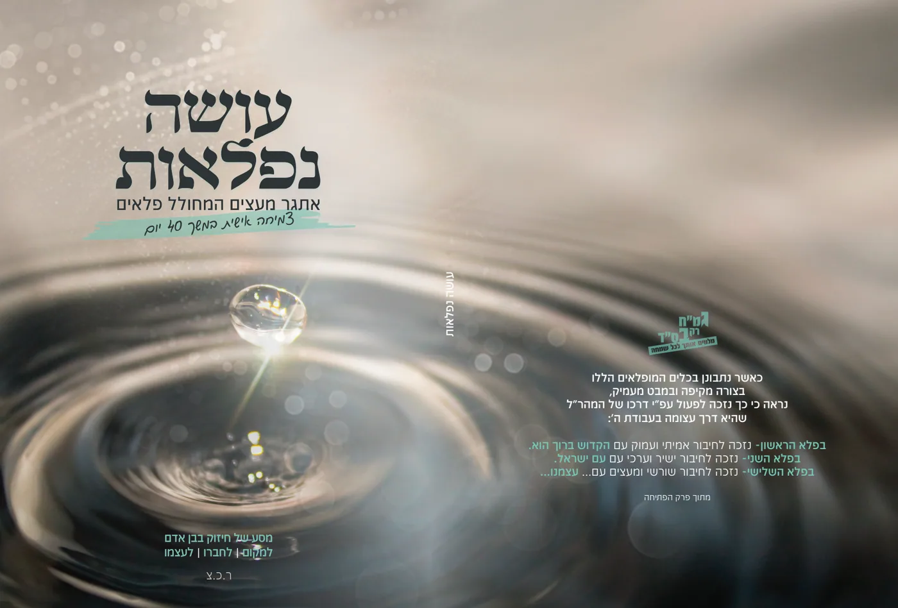

בעמוד זה (7)
כוונת הצום ביום כיפור
התרופה הנפלאה לצום קל כוונת הצום מהיסוד ושורש העבודה חוברת נפלאה שתהפוך לך את הצום - לצום קל רבים העידו שדברים…

פירות הילולים - ט"ו בשבט
הבנת אמיתית של מעלת המנהג של אכילת פירות ט"ו בשבט. \עם סדר אכילתם מתוך הכרה בטובת החסד המופלג של מתנת הפירות ה…

כיצד מנקים לפסח בשמחה ובקלות
רעיונות נחמדים לנקות לפסח - מתוך שמחה והודיה לחץ כאן לראות את החוברת - קריאה נעימה

תוף מרים - לפסח ולכל השנה
מתאים מאוד למורות. על מרים הנביאה - אם השירה בישראל לכבוד המורה היקרה - תוף מרים במתנה🥁🎁 תמיד את מחפשת, על איז…
פורים - מבצעי משלוח מנות
פנקס, דיסק ומגנטים במבצעים מיוחדים כל שנה אתם מתלבטים בשאלה, מה לשים במשלוח המנות, שישמח באמת את שכינכם וחבריכ…

חודש אהבה
חודש טוב ומבורך! זוכים אנו להגיע לחודש של אהבה. חודש אלול כותב הסבא מקלם זצ"ל: הוא חודש האהוב והנחמד במזלות הש…
שבת הגדול מהותו וענינו
מה מיוחד בשבת הגדול והלקח היוצא מזה לחץ כאן לקרות את החוברת שבת הגדול.pdf